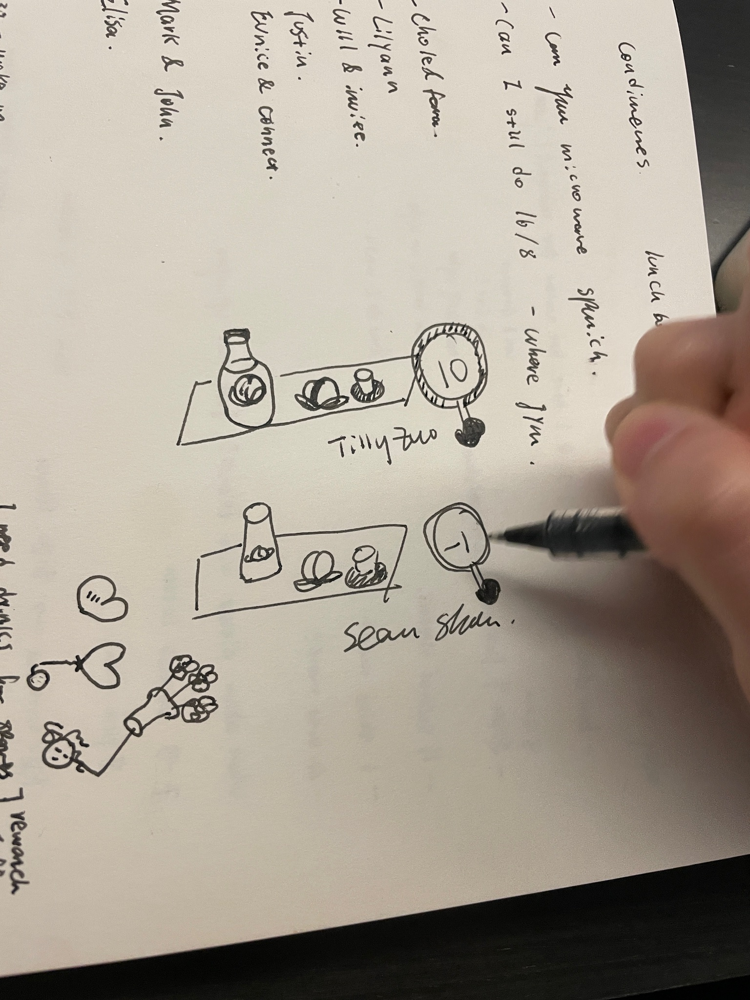
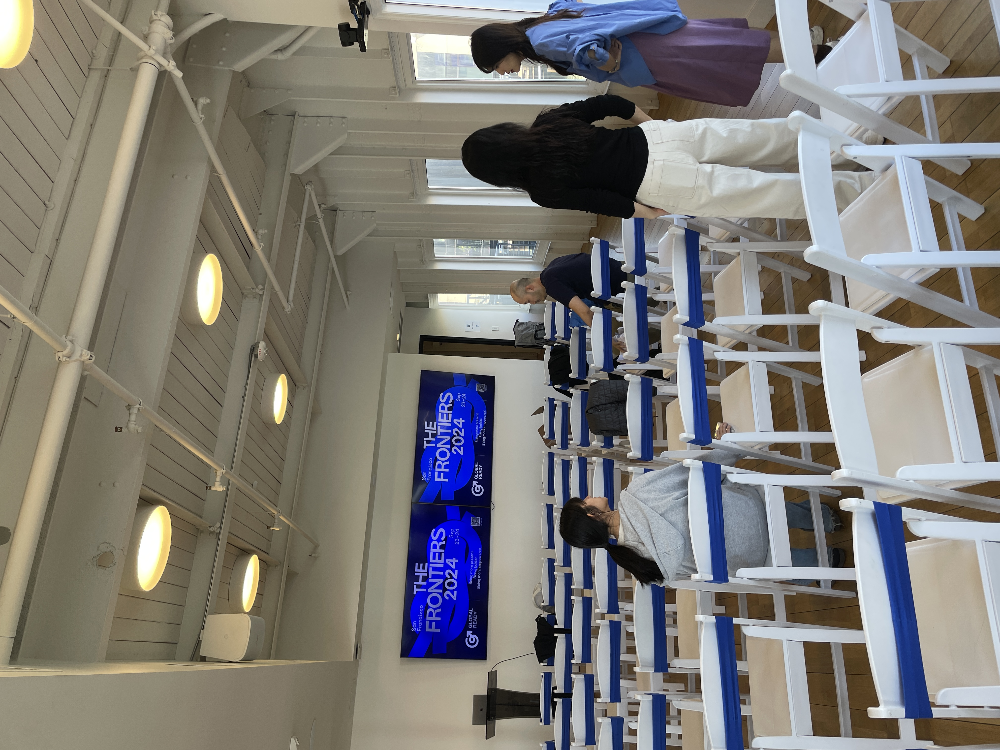
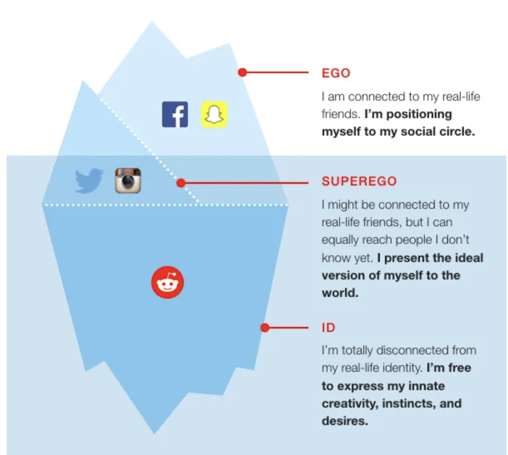

Ongoing Journey - September 2024
Survior’s Bias in Job Hunt
Drawing contest between me and tilly, Tilly won by 11 points.Crystal started job hunting, I had a similar experience back in May. Three weeks and 27 mock interviews, eventually I held it off in the end bc 1) everyone says diffrent things 2) the quality are a great mixed with people ranging from no to max expeirence
Thinking now this IS the text book definition of survivor’s bias. Around May the fitting PMs to the market have most likely gotten job offers, leaving only the average ones in the pool.
Which does match with the ‘apply early rule’, the benefits is three fold 1) you get faster in the queue when the recruiter sees fits 2) you move faster in the cycle given them more headcount / less comparisons to look at and 3) there are more ‘good’ PMs who are around that you can mock with
I also think perhaps that’s the reason why relative comparisons (comparing to people who are in a similar spot as you) is a toxic trait, bc no matter if you are good or not, you are always comparing to below average candidates in the pool, which serves as a false reference.
But It’s difficult to get absolute matches, so the best choice here is to compare to oneself. And the best person I get to think of is Nancy, forging own path and try to find a different location on the map to go to.
Although People cool as Nancy also had a discovery period, I vividly remember Nancy also went through the relative compare phases, she wrote an whole article on securing the internship at Statefarm, did seem like she deelted though, that’s a shame I really liked that article :(
Meeting Stars
A conference on boat, was very funBack in 2022 I read an article about react videos, clipped the article and read it a few times. Early this month opened RED and 3 reaction video popped up, thought aobut the article again, read it through, found the author on LinkedIn, and sent a short message with thank you.
It turns out this person works at a founder commuinty and was very educaitonal / intersting getting to learn her path in life, had a very fun conversation.
From time to time I get to remind myself life is non-linear, things pops up from time to time. Relationships, job hunts, investments, many many more. Goal here is less about complaining how anti-instinct these gets, more so writing here to remind myself that good things eventually come (so are bad things lol).
Let the world flow through you was what Weichen said in his blog, still reading it through
Documenting, Sharing
 There was this activity at IKEA where you find 6 bears and get a prize, we found all 6 B)
There was this activity at IKEA where you find 6 bears and get a prize, we found all 6 B)
On the thought of letting the world flow through, much of my joy was found on documenting what I see / learned while letting the world flow through.
The joy came from two parts, the obvious one of learning more about myself / 当下自己所想的, and the other about sharing intersting things to others.
I found a X post this week mentioning this as a ‘pebbler’:
So apparently the act of sending loved ones little videos and cute pictures and funny things throughout the day is called “Pebbling” because there’s a species of penguin that likes to leave pebbles in their partners’ nests to show they care, and this is my happy thing for today
via Jonathan Edward Durham
Using the phrase pebbles, I am leaving peebles for others to show them I care, and leaving peebles for myself to help the future self to understand of current / unstuck.
Leaving Gap Between Me & Others
This month I landed an offer, and held back on letting people around me know. Funny enough, through my years of living, this has happened a few times, where I create this buffer on situations that happens to me, to when they hear about the situations.
…
Last time I checked Intimate Relationships I was identified as avoidtantly attached, where I act indifferent towards people’s attention (yes, even when I would want them).
To me the reasons have always been 1) I put less trust on people around me 2) I want to prepare myself for the situations first and 3)I want to draw less attention.
All of these can be summarized towards ‘I hate people’ and wanting to be alone.
Now, right before I identified myself as an edge lord, Chloe provided a much clearer view on a similar issue. Chatting with her made me realize it’s not that I don’t like people (and so much the opposite), I very much like the people around me, it’s just really difficult for me to let them have expectations of me.
Of course I can’t control what people’s expectation of me can be lol, so I just held back of my life all together
…
I am afraid that people around me will be disappointed of me, so I held my life away from them, not letting them to have a close shot, trying to present this stable, slow pacing, upward view. Quoting what Chloe said, it’s a combnation of having too much expectations of myself & fear of not meeting others’ expectation, all combined with a worry that no one understand what this feeling is.
It’s less about I don’t care, but perhaps I care too much, I want to people around me to look at the perfect me, and writing it now, it does feel quite aggrogant thinking in that way.
Which, I think that’s also a reason why I feel drawn towards tilly? as the two of us have similar characteristcs, just two different way of showing. Tilly shows a very marked up version of her life, where I don’t show my life all together. I wonder if that’s a general characteristcs in our population too, trying to match our life to an Instagram self (which is ego).
An article about psychoanalysisCrystal talked about this idea of id, ego, and superego through psychoanalysis, and I saw this graph. My thought right now is life is about aligning the three more and more, and ability to show all three at somepoint, what we call maturing?